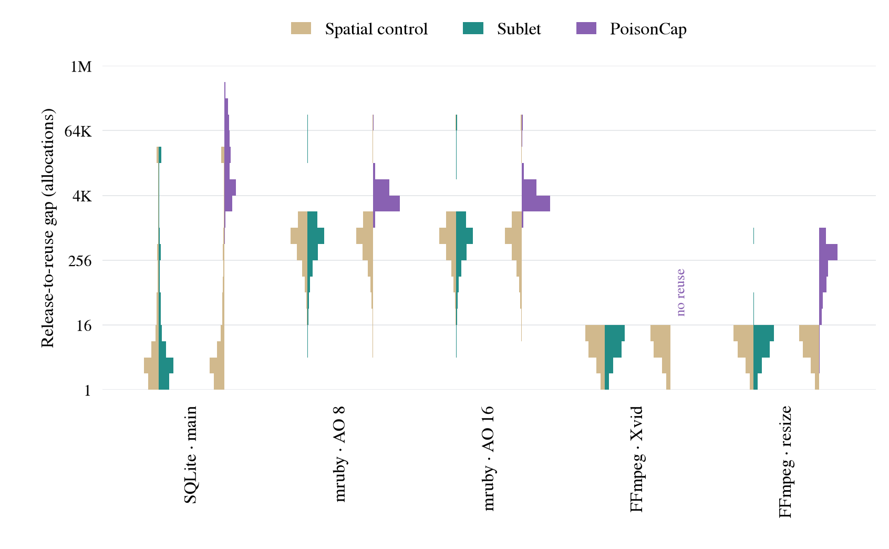
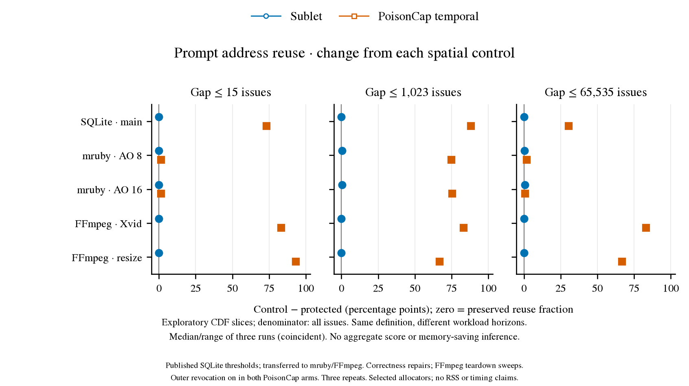
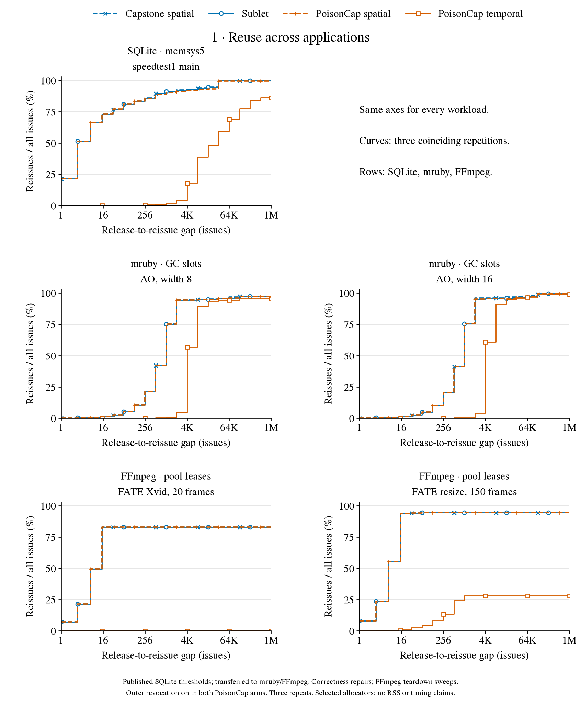
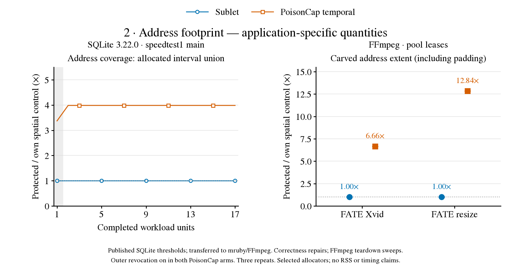
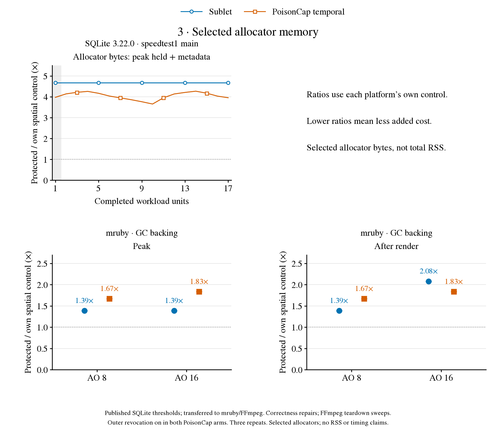
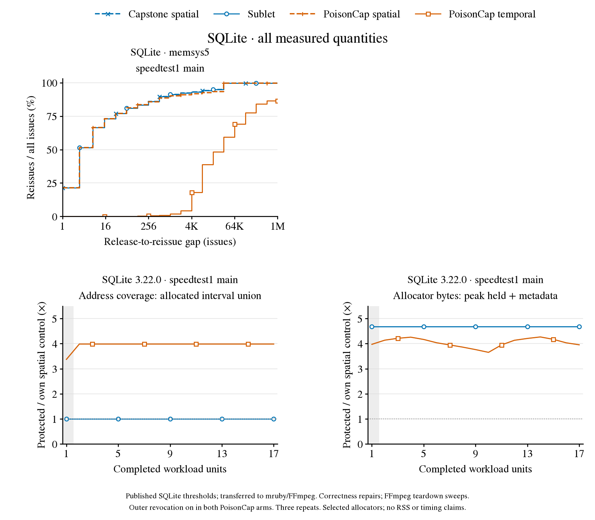
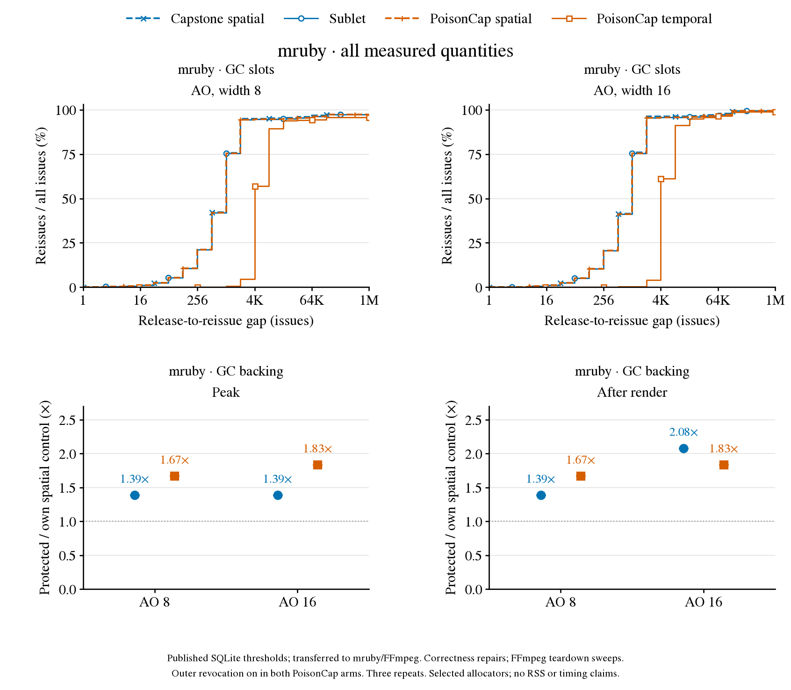
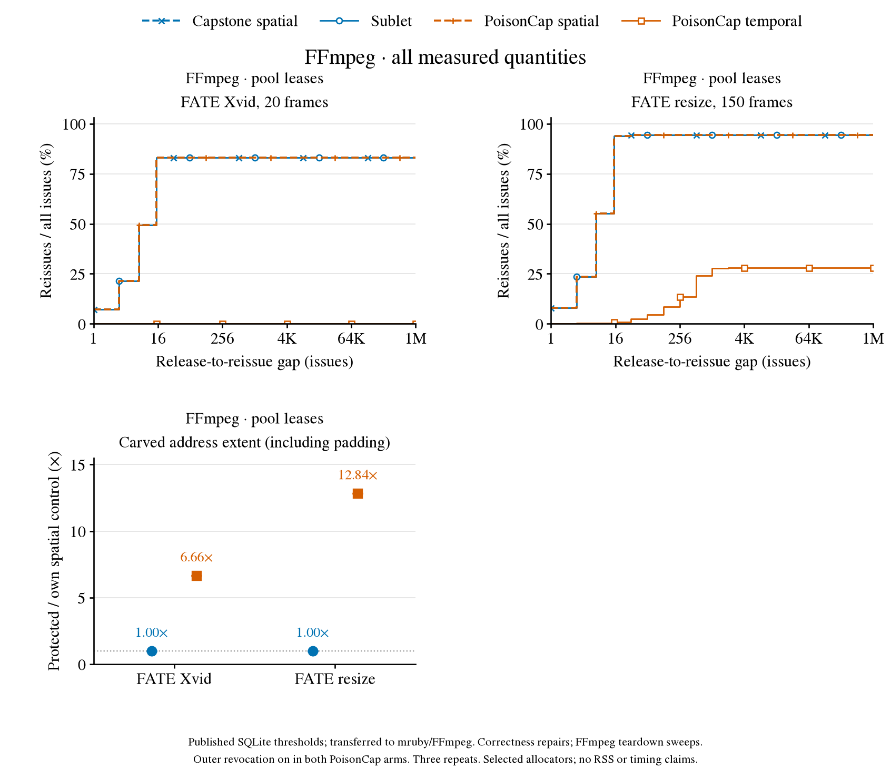

Speicherverhalten · Plot-Review
Haupteinstieg: nach Metrik. Die Anwendungsansicht zeigt dieselben Messungen in anderer Gruppierung.
Drei Anwendungen, fünf Workloads, vier Arme, je drei Wiederholungen: 60 vollständige Prozesse (54 neu, sechs archivierte Kontrollen).
Diese Neuordnung enthält keine neuen Messläufe.
Blau: Capstone/Sublet. Orange: PoisonCap. Gestrichelt: räumliche Kontrolle; durchgezogen: geschützt.
Verhältnisse vergleichen immer geschützt / eigene Plattformkontrolle; 1× bedeutet keinen Mehrbedarf in dieser Metrik.
| Anwendung | Reuse | Adressraumbedarf | Allocator-Speicher |
|---|
| SQLite | Ja | Intervallvereinigung, Verlauf | Peak + Metadaten, Verlauf |
| mruby | Ja, AO 8/16 | Noch nicht gemessen | GC-Peak & nach Rendern |
| FFmpeg | Ja, Xvid/Resize | Pool-Ausdehnung | Noch nicht vergleichbar gemessen |
Wiederverwendung: Verteilung
PDF · Messwerte

Benchmarks auf der X-Achse; Wiederverwendungsabstand auf der logarithmischen Y-Achse.
Je Benchmark stehen Sublet und PoisonCap nebeneinander, jeweils mit der eigenen Kontrolle als sandfarbener linker Hälfte.
Die Verteilungen umfassen nur beobachtete Wiederverwendungen. Häufigkeiten stehen weiterhin in der CSV.
Die leere PoisonCap-Hälfte bei Xvid bedeutet keine beobachtete Wiederverwendung.
Eine Metrik über alle Anwendungen
Gemeinsamer Reuse-Vergleich als PDF ·
Messwerte als CSV
Jede Zeile ist ein Benchmark. Die Punkte zeigen die Änderung gegenüber der eigenen räumlichen Kontrolle
an drei Abständen der vorhandenen Reuse-CDFs. Null bedeutet: Der Wiederverwendungsanteil bleibt erhalten.
Explorative Übersicht über bestehende Läufe mit unterschiedlichen Arbeitshorizonten; noch kein gemeinsames A–D-Experiment.

Kein physisches Working Set oder Gesamt-RSS; Adressmetriken und Allocator-Bytes sind getrennt.
PoisonCap: veröffentlichte SQLite-Schwellen, für mruby/FFmpeg übertragen; Korrekturen und Teardown-Sweeps dokumentiert.
Die ältere gemischte Ablage bleibt für bestehende Links erhalten.
Nach Metrik · hier beginnen
Alle drei Blätter als PDF
Wiederverwendung
Alle fünf Workloads, dieselben Achsen und vier Arme. Die CDF teilt Wiederverwendungen durch alle Allokationen; sie muss daher nicht 100 % erreichen. Gemessen wird derselbe Startadresswert.
PDF öffnen
Adressraumbedarf
SQLite: Vereinigung bisher allokierter Adressintervalle über 17 Einheiten. FFmpeg: höchste genutzte Pool-Ausdehnung inklusive Padding. Das sind unterschiedliche Adressmetriken, keine Messungen des physischen Working Sets. Für mruby liegt diese Metrik nicht vor.
PDF öffnen
Allocator-Speicher
SQLite: Peak aus gehaltenen Bytes plus Metadaten. mruby: GC-Backing am Peak und nach dem Rendern. Die Grenzen der erfassten Allocatoren unterscheiden sich; keine Gesamt-RSS-Messung. Die höheren Sublet-Kosten bei SQLite und nach AO 16 bleiben sichtbar. FFmpeg hat hier noch keine vergleichbare Messung.
PDF öffnen
Nach Anwendung · dieselben Daten
Alle drei Blätter als PDF
SQLite
SQLite 3.22.0, speedtest1 main: Reuse, Adressabdeckung und Allocator-Peak. 17 vollständige Einheiten pro Prozess; sechs neue PoisonCap-Läufe und sechs archivierte Capstone-Kontrollen.
PDF öffnen
mruby
AO 8 und AO 16: Reuse, GC-Peak und GC-Backing nach dem Rendern. 24 neue Prozesse. Compiler-Optimierung des Interpreter-Archivs noch nicht angeglichen; siehe Methoden.
PDF öffnen
FFmpeg
Adaptierte FATE-Eingaben: Xvid mit 20 Frames und Resize mit 150 Frames. Reuse und Pool-Ausdehnung; 24 neue Prozesse. Feste 256-MiB-Reservierung und zusätzliche PoisonCap-Snapshot-Bytes sind nicht Teil der gezeigten Pool-Ausdehnung.
PDF öffnen